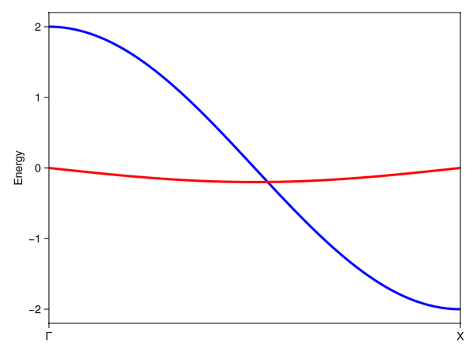
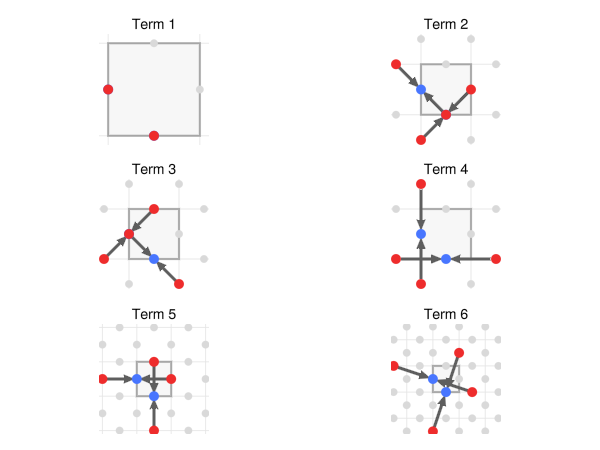

Non-Hermitian tight-binding models
By default, the models returned by tb_hamiltonian are Hermitian. In addition to Hermitian models, however, it is also possible to return anti-Hermitian or generically non-Hermitian (neither Hermitian or anti-Hermitian) models. Here, we showcase the latter.
Hatano–Nelson model
The archetypical non-Hermitian model is the 1D Hatano–Nelson model, consisting of a single site and nearest-neighbor hoppings, in a setting with only time-reversal symmetry. It is simple to build this model with SymmetricTightBinding.jl:
using Crystalline, SymmetricTightBinding
brs = calc_bandreps(1, 1) # EBRs in plane group 1, with time-reversal symmetry
pin_free!(brs, [1=>[0]]) # the 1a Wyckoff position in plane group 1 has a free parameter: set to 0 for definiteness
cbr = @composite brs[1] # single-site model
tbm = tb_hamiltonian(cbr, [[1]], NONHERMITIAN) # nearest neighbor hoppings2-term 1×1 TightBindingModel{1} (nonhermitian) over (1a|A):
┌─
1. 𝕖(δ₁)
└─ (1a|A) self-term: δ₁=[1], δ₂=-δ₁
┌─
2. 𝕖(δ₂)
└─ (1a|A) self-term: δ₁=[1], δ₂=-δ₁The model is very simple: two different hopping terms, corresponding to right- and left-directed hopping terms. The absence of hermiticity allows the hopping amplitudes in either direction to differ, contrasting the Hermitian case:
tb_hamiltonian(cbr, [[1]], HERMITIAN)1-term 1×1 TightBindingModel{1} (hermitian) over (1a|A):
┌─
1. 𝕖(δ₁)+𝕖(δ₂)
└─ (1a|A) self-term: δ₁=[1], δ₂=-δ₁The non-Hermitian model reduces to the Hermitian model when the left- and right-directed hopping amplitudes are equal. When the two are not equal, the Hatano-Nelson model features exceptional points and spontaneous symmetry breaking of the real spectrum, as we can verify by example (using Brillouin.jl and GLMakie.jl for dispersion plotting):
ptbm = tbm([0.9, 1.1]) # a model with 0.9 hopping amplitude to right, 1.1 to the left
using Brillouin
kp = irrfbz_path(1, directbasis(1, 1)) # a k-path in plane group 1
kpi = interpolate(kp, 500) # interpolated over 500 points
Es = spectrum(ptbm, kpi)
Es_re = sort(real.(Es); dims=2)
Es_im = sort(imag.(Es); dims=2)
using GLMakie
plot(kpi, Es_re, Es_im; color=[:blue, :red])
We can also explore the consequences of breaking time-reversal symmetry:
brs_notr = calc_bandreps(1, 1; timereversal=false) # EBRs in plane group 1, without time-reversal symmetry
pin_free!(brs_notr, [1=>[0]])
tbm_notr = tb_hamiltonian((@composite brs_notr[1]), [[0], [1]], NONHERMITIAN) # on-site terms _and_ nearest-neighbor hoppingsA more complicated example: exceptional surfaces in p4
We can also construct more complicated examples where symmetry plays a role. Consider for example the following simple extension of the Hatano-Nelson model to a 2D lattice with p4 symmetry:
brs = calc_bandreps(10, Val(2))
cbr = @composite brs[1]
tbm_H = tb_hamiltonian(cbr, [[0,0], [1,0]], Val(HERMITIAN))
tbm_NH = tb_hamiltonian(cbr, [[0,0], [1,0]], Val(NONHERMITIAN))6-term 2×2 TightBindingModel{2} (nonhermitian) over (2c|A):
┌─
1. ⎡ 1 0 ⎤
│ ⎣ 0 1 ⎦
└─ (2c|A) self-term
┌─
2. ⎡ 0 𝕖(δ₃)+𝕖(δ₄) ⎤
│ ⎣ 𝕖(δ₁)+𝕖(δ₂) 0 ⎦
└─ (2c|A) self-term: δ₁=[1/2,-1/2], δ₂=-δ₁, δ₃=[1/2,1/2], δ₄=-δ₃
┌─
3. ⎡ 0 𝕖(δ₁)+𝕖(δ₂) ⎤
│ ⎣ 𝕖(δ₃)+𝕖(δ₄) 0 ⎦
└─ (2c|A) self-term: δ₁=[1/2,-1/2], δ₂=-δ₁, δ₃=[1/2,1/2], δ₄=-δ₃
┌─
4. ⎡ 𝕖(δ₁)+𝕖(δ₂) 0 ⎤
│ ⎣ 0 𝕖(δ₃)+𝕖(δ₄) ⎦
└─ (2c|A) self-term: δ₁=[1,0], δ₂=-δ₁, δ₃=[0,1], δ₄=-δ₃
┌─
5. ⎡ 𝕖(δ₃)+𝕖(δ₄) 0 ⎤
│ ⎣ 0 𝕖(δ₁)+𝕖(δ₂) ⎦
└─ (2c|A) self-term: δ₁=[1,0], δ₂=-δ₁, δ₃=[0,1], δ₄=-δ₃
┌─
6. ⎡ 0 𝕖(δ₃)+𝕖(δ₄) ⎤
│ ⎣ 𝕖(δ₁)+𝕖(δ₂) 0 ⎦
└─ (2c|A) self-term: δ₁=[3/2,-1/2], δ₂=-δ₁, δ₃=[1/2,3/2], δ₄=-δ₃It is instructive to visualize both the Hermitian and non-Hermitian models and compare the involved hopping terms:
plot(tbm_H)
plot(tbm_NH)